Todo lo que va en un baño. Y lo que va en el suelo.
Nueve familias de material para suelos y paredes, y todo el equipamiento del baño. Abre una familia: la página toma su tono.
Pavimentos y revestimientos
-

Baja porosidad y resistencia al agua: el material para zonas de paso, baños, cocinas, piscinas y fachadas. Imita a la perfección madera y piedra natural.
Formatos desde 20×20 hasta gran formato de 120×240 y lastras de 3,2 m. Rectificado, antideslizante para exteriores, espesores de 6 a 20 mm.
- Marcas
- Florim (Rex, Cerim, Floor Gres)
- Mutina
- Imola
- Revigres
- Aparici
-

Esmaltes de color, piezas pequeñas y relieves. Lo que da carácter a un baño de hotel o a la barra de un restaurante.
Formatos de 5×15, 10×10, 13×13 y 20×20; esmaltes brillantes y mates; series de color a medida.
- Marcas
- Equipe Cerámicas
- Cevica
- Cerámicas Cifre
- Aparici
-

Cemento coloreado a mano por fabricantes catalanes. La estética novecentista de Barcelona, en suelos y también en paredes.
20×20 y hexágonos; colecciones de catálogo y diseños propios en pequeñas producciones; también en versión porcelánica.
- Marcas
- Fabricantes catalanes de mosaico hidráulico
- Cevica (símil hidráulico)
-

Travertino, caliza, mármol. Cada pieza es distinta; el asesoramiento aquí es elegir el bloque, el acabado y el formato.
Acabados pulido, apomazado, envejecido; formatos a medida; tratamiento para baños y exterior.
- Marcas
- Selección de canteras nacionales e italianas
- Casadolcecasa
-

Teselas de vidrio, cerámica y piedra. Para piscinas, hammams y spas, y para la pared que quieres que se recuerde.
Teselas de 1×1 a 5×5 en malla; degradados y diseños a medida; alta resistencia al cloro y al agua.
- Marcas
- Sicis
- Hisbalit
-

Barro cocido y acabados rústicos. Lo que elegimos para las masías del Empordà y las casas de pueblo.
Tova catalana, hexágonos y formatos tradicionales; tratamientos hidrofugantes.
- Marcas
- Fabricantes de barro cocido nacionales
-

Roble y otras maderas, en tarima maciza o multicapa, para viviendas y habitaciones de hotel.
Lamas anchas y espiga; acabados aceitados y barnizados; compatibles con suelo radiante.
- Marcas
- Floover
- Fabricantes de tarima europeos
-
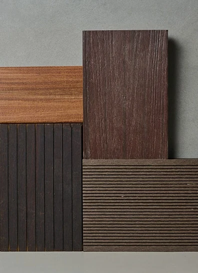
Tarimas y porcelánicos antideslizantes de 20 mm para terrazas, alrededor de piscinas y fachadas.
Porcelánico 20 mm sobre plots; tarima tecnológica; piezas especiales de borde de piscina.
- Marcas
- Florim
- Revigres
-
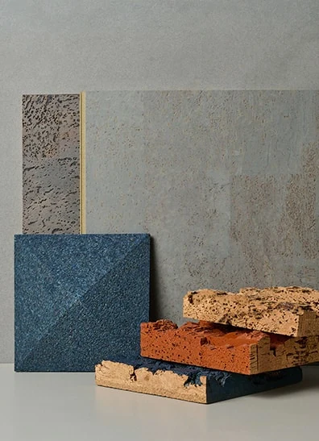
Vinílicos, corcho y revestimientos decorativos para suelos continuos y paredes.
Vinilo en lamas y losetas; corcho con acabados de madera; paneles decorativos.
- Marcas
- Granorte
- Panelpiedra
- Wonderwall
- Inkiostro
-
Porcelánicos y superficies sinterizadas de gran formato para encimeras, revestimientos y suelos sin apenas juntas.
Lastras de hasta 320×160 y 3,2 m; espesores de 6 a 20 mm.
- Marcas
- Dekton
- Silestone
- Neolith
- Laminam
- Atlas Concorde
-
Porcelánico y piedra para fachadas ventiladas y revestidas, con sus perfiles y sistemas de fijación.
Sistemas de fachada ventilada; perfiles y remates.
- Marcas
- Mayor
- Emac
- Orac
- Natur
-
Mosaico, porcelánico y piezas especiales de borde para piscinas y sus alrededores.
Piezas de coronación, rejillas y antideslizantes.
- Marcas
- Mayor
- Emac
- Orac
- Natur
-
Pavimentos y revestimientos para spas, hammams y zonas de agua, resistentes a la humedad y al uso intensivo.
Antideslizantes y piezas especiales.
- Marcas
- Mayor
- Emac
- Orac
- Natur
Baño
-

Monomando, bimando y termostáticas, en cromo, acero, oro, platino, bronce y latón. Electrónicas y de ahorro de agua.
Caños a medida para proyectos de hotel, como el MEM de Dornbracht del Hotel Arts.
- Marcas
- Dornbracht
- Axor
- Hansgrohe
- Fantini
- Samuel Heath
- Zucchetti
- Rovira
-
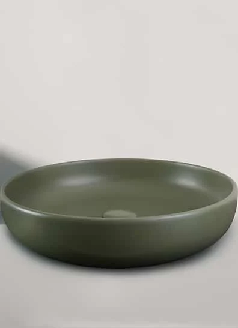
Cerámica, Corian, piedra y metal. Del lavabo de una habitación de hotel al de columna de una suite.
- Marcas
- Agape
- Catalano
- Cielo
- Bathco
- Alape
- Artelinea
-
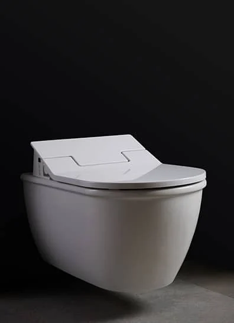
Suspendidos, con cisterna empotrada, softclose, rimless y de higiene íntima.
- Marcas
- Duravit
- Villeroy & Boch
- Catalano
- Geberit
-
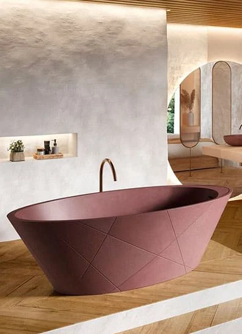
De acero esmaltado, acrílico y materiales sólidos. Con cromoterapia en el ABaC, exentas de Starck en el Arts.
- Marcas
- Kaldewei
- Makro
- Agape
- Hidrobox
- Duravit
- Teuco
-
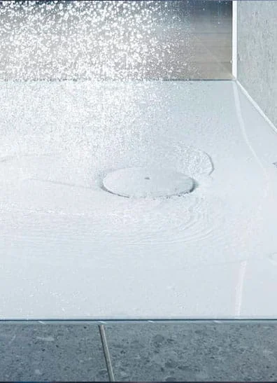
Resina, acero y cerámica, cortados a medida y en cualquier color.
- Marcas
- Hidrobox
- Makro
- Novellini
- Kaldewei
-
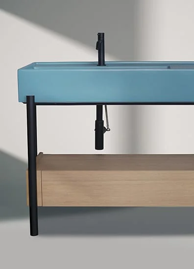
Madera, Corian y lacados en cualquier RAL. Con nuestro departamento de interiorismo, a medida hasta el último detalle.
- Marcas
- Inbani
- Rexa Design
- Madero Atelier
- Unibaño
- Duravit
- Mapini
-
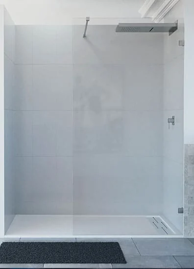
Vidrio templado con tratamiento antical y juntas invisibles.
- Marcas
- Novellini
- Huppe
- Makro
-
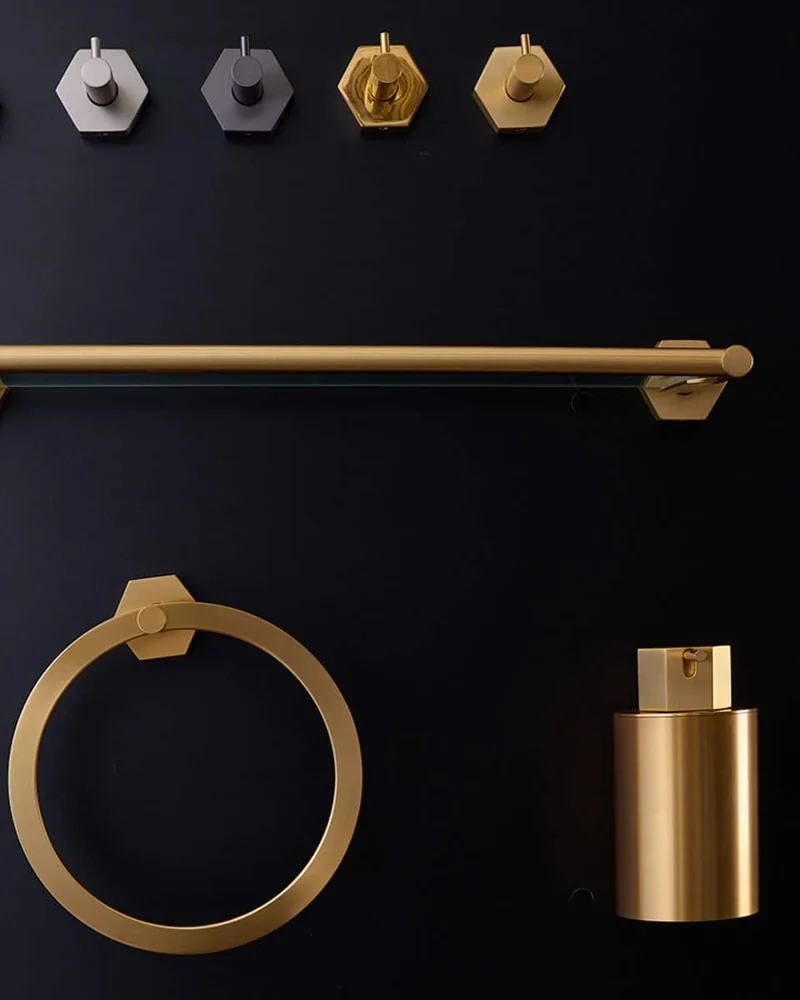
Espejos con luz y almacenaje; accesorios en acabados a juego con la grifería.
- Marcas
- Cosmic
- Pom d’Or
- Hewi
-
-
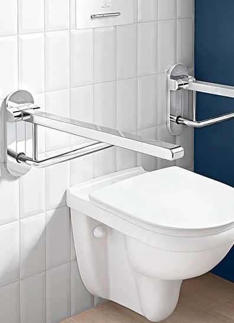
Asientos, barras y apoyos con diseño, para hoteles y viviendas.
- Marcas
- Hewi
-
-
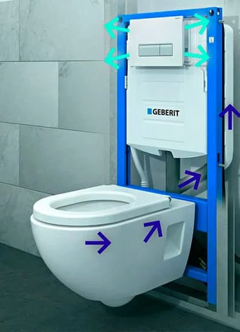
Lo que no se ve y tiene que funcionar veinte años.
- Marcas
- Geberit
- TECE
Si lo que buscas no está en los showrooms, lo buscamos en la Bagnoteca, nuestra biblioteca de catálogos de todas las firmas. Y en Gran Via 494 hay un outlet de baño con descuentos en primeras marcas.